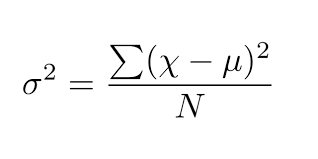

Datamares & Dreamscapes
English
Português
Home
Software
CV
About
Posts
Categories
All
(16)
education
(1)
machine learning
(2)
news
(1)
python
(1)
statistics
(5)
time-series
(1)
tools
(5)
Creating a Linux Personal Package Archive (PPA)
How I created my own PPA to distribute RStudio, Quarto and Positron.
tools
There’s a new PPA available for Ubuntu and Fedora users that allows you to install the latest versions of RStudio, Quarto and Positron with a single command. This PPA is…
Jun 9, 2025
Alberson Miranda
All models are wrong, but some are useless
Part I: Pearson correlation and significancy
time-series
When you do use the Pearson correlation coefficient, always test for significance. But don’t use it to analyze time series. It’s a common mistake. It violates the…
Apr 19, 2025
Alberson Miranda
Hierarchical Time Series: Theory
statistics
For almost a decade now, every year around this time I work with time series forecasting at Banestes. When it comes to setting goals and budget objectives (balances…
Oct 25, 2022
Alberson Miranda
The Role Of Mathematics Education Under The Hegemony Of Capital
Pre-capitalist Education
education
This post was taken from a chapter of my undergraduate thesis in Mathematics, defended in 2024.
Aug 14, 2022
Alberson Miranda
Template for Theses in Quarto
tools
Since I’m starting to write my thesis this semester, why not kill two birds with one stone (sorry, Luisa Mell) and get to know this Quarto everyone is talking about? Well, he…
Aug 3, 2022
Alberson Miranda
Python from R I: package importing (and why learning new languages sucks)
python
When learning a new programming language, simply finding equivalent code for the practices you already have may be misleading. Here we’re able to see that an equivalent of…
Jun 12, 2021
Alberson Miranda
R in 2021 with VSCode
tools
I first installed VSCode in october 2020 when I’ve decided to learn Python. Looking for the ideal setup, I’ve read somewhere that Spyder would be the best IDE for R
(R Core…
Jun 1, 2021
Alberson Miranda
A Bit of Concepts: Overfitting & Resampling
machine learning
Although they are recurring terms in
machine learning
,
resampling
and
overfitting
are often discussed only in practice, frequently without a deep understanding. In this post
1
…
Apr 17, 2021
Alberson Miranda
Introduction to the {mlr3} Framework
machine learning
This is the first post in a series about the {mlr3} ecosystem
(Lang et al. 2019)
. It is more complete and also much more complex than its predecessor, {mlr}, which had its…
Dec 27, 2020
Alberson Miranda
Effect Size and Gender Income Inequality in Vitória
statistics
There is still a lot to cover in this “Inference 101” series and, to continue our studies, I brought the 2017 RAIS (Annual Social Information Report) dataset
1
. With it, we…
Nov 24, 2020
Alberson Miranda

Comparing Variances: The F Test
statistics
Before I dive into
machine learning
—because
it’s a bottomless pit
I should take my time when I do—I want to cover a bit more of the basics in inference.
Nov 20, 2020
Alberson Miranda
Guessed or not? The one-sample t-test
statistics
In the previous post, I talked about the t-test for two independent samples. Coincidentally, the next day, this question appeared on the math forum where I contribute. We…
Nov 6, 2020
Alberson Miranda
Testing differences in means: the t-test for independent samples
statistics
Suppose you have two samples (e.g., the incomes of the Black and White populations in your city) and you want to prove that their means are
significantly
different, that is…
Nov 2, 2020
Alberson Miranda
Graphic quality in the RStudio panel
tools
If you’ve ever plotted a line chart in R and, when you saw the plot in the RStudio panel, thought “wow, what terrible quality!”, you’re not alone. But don’t worry, the…
Oct 19, 2020
Alberson Miranda
Configuring git behind a proxy server
tools
If you are working in an organization that takes information security seriously, then you are probably behind a proxy server and having trouble using Git. To solve this, we…
Sep 25, 2020
Alberson Miranda
Hello World
news
After a couple of posts on LinkedIn and Kaggle, it was about time for me to set up my own blog for data science, wasn’t it?
Sep 11, 2020
Alberson Miranda
No matching items